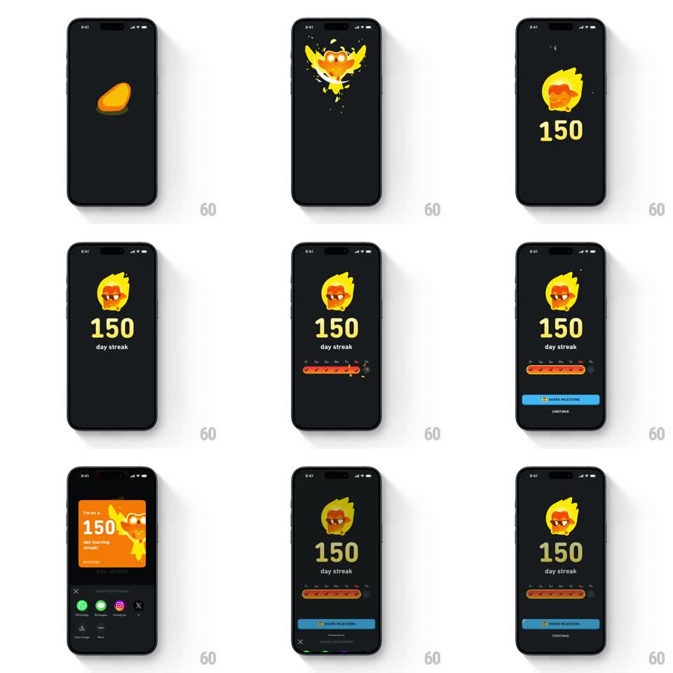

Media
Frame-by-frame

Rebuild this animation 1:1: Duolingo's 150-day streak celebration - the flame coin bursts with sparkles, Duo appears in flames wearing sunglasses, the week calendar fills with streak pills, and the share sheet slides up with the milestone card.

Rebuild this animation 1:1: Duolingo's 150-day streak celebration - the flame coin bursts with sparkles, Duo appears in flames wearing sunglasses, the week calendar fills with streak pills, and the share sheet slides up with the milestone card.
## Integration
Integration: stack-agnostic spec - springs given as stiffness/damping, timed motions as duration + curve; map every value to your framework and animation library of choice.
## Scene
Duolingo streak screen, near-black: flaming Duo owl at top, a huge yellow "150" with "day streak" beneath, the 7-day week row (Fr Sa Su Mo Tu We Th) with orange streak pills, a blue "SHARE MILESTONE" button and "CONTINUE" text button. The share state: an orange milestone card ("I'm on a 150 day learning streak!" with Duo) above a grid of share targets (WhatsApp, Messages, Instagram, X, Save image, More).
## Motion spec
Pattern: multi-stage milestone celebration ending in a share sheet.
- Stage 1: the streak flame coin pops from center (scale 0 -> 1.2 -> 1, spring ~450/14) with a ring of sparkles bursting outward (8-10 particles, 60-120px travel, fading over 400ms).
- Stage 2: the coin flips into flaming Duo (rotateY 180deg over 400ms, flames flickering with a continuous 300ms scale cycle 1 -> 1.05).
- Stage 3: "150" slams in below (scale 1.6 -> 1, 250ms) with "day streak" fading under it (200ms).
- Stage 4: the week row slides up (24px, 300ms) and each day's streak pill fills left to right (80ms apart, orange wipe) with the today's pill pulsing once (scale 1 -> 1.15 -> 1).
- Stage 5: SHARE MILESTONE and CONTINUE fade up (300ms).
- On share: the milestone card springs up from the bottom (spring ~320/20) while the celebration dims (opacity 0.4); share target icons stagger in (50ms apart, scale 0.5 -> 1).
## Calibration
- Yellow number, orange flame, blue CTA - Duolingo's exact palette, nothing else saturated.
- Each stage triggers only after the previous settles - a staircase, never an overlap.
## Reduced motion
Single crossfade per stage (300ms); sparkles and card springs removed.
## Don't miss
- The week row's labels and filled pills must align exactly - the streak visual is the proof.
- The share card is orange with white type - a different treatment from the dark celebration behind it.